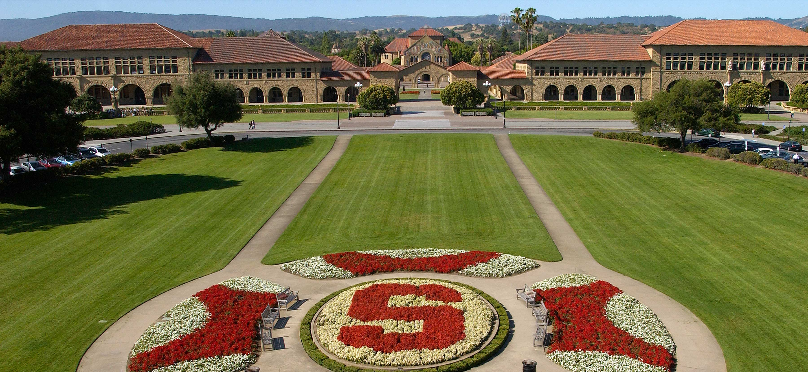
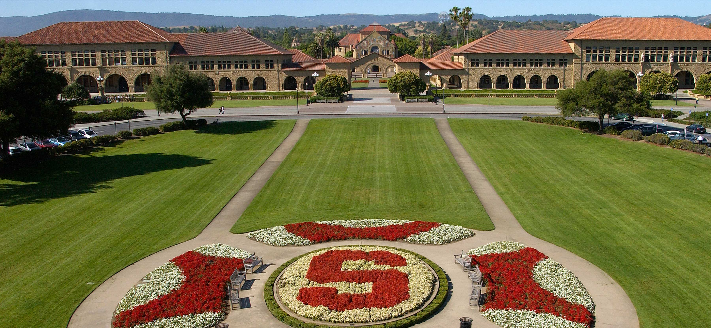

Welcome!
In this website, you will learn about the three colleges I hope to attend in the future! From community to university, I will not only specifically expalin why I even want to attend these colleges, but I will also explain what needs to be done to even have a chance on being accepted there. This website's prupose is not only for my benefit, but for yours too (especially if you plan to attend any of these colleges).
 

Top 3 Colleges I Want to Attend:
- Community College of Baltimore County [Essex] (CCBC)
- Towson University
- University of Maryland Baltimore County (UMBC)